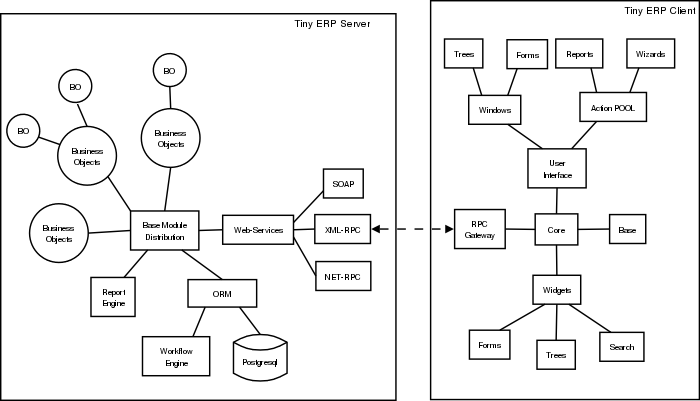

API
Working with Web Services
Given the architecture of OpenERP, it is not possible to reliably access the database with the PostgreSQL client or through a direct connection method such as ODBC. Fortunately, OpenERP provides a very comprehensive set of web services that allow you to do everything through standard protocols.
Supported Web Services Protocols
The currently supported protocols are XML-RPC and Net-RPC. XML-RPC is one of the first standard for web services, and can be used in almost any language. It is a pretty verbose protocol, which may sometimes introduce a bit of latency. Net-RPC, on the other hand, is an optimized protocol particularly designed for use between applications written in Python.
Support for REST-style webservices is planned for future releases of OpenERP.
Support for the SOAP protocol is deprecated at the moment, but could maybe be revived if sufficient interest is found in the community.
Available Web Services
The OpenERP server provides you with the following web services.
db: Provides functions to create, drop, backup and restore databases. Use with caution!
common: Lets you log in and out of OpenERP, and provides various utility functions. You will need to call the function "login" before you can use most of the other web services.
object: The most useful web service, as it provides access to the OpenERP Objects. Most notably, the function "execute" lets you call methods of the Objects, such as moste of the ORM methods to search, read and write records. It can also be used to call any other method of the object, such as computing a price for example.
Another useful function is "exec_workflow", which lets you make a record progress through a workflow.
wizard: Provides access to the old-style wizards. Please note that the new-style wizards are based on the ORM, and as such they can be accessed though the "object" web service.
report: Lets you generate and retrieve reports.
Example : writing data through the Web Services
Here is an example process that you could follow to write data. You will find more detailed examples for XML-RPC in various programming languages in the next chapter.
-
login: call "login" in the web service "common" with the following parameters:
- database
- user name
- password
-
create a new partner: call "execute" in the web service "object" with the following parameters:
- database
- user id provided by "login" in step 1.
- the object name : 'res.partner'
- the name of the ORM method : "create"
- some data to be recorded
The data mentioned above is a dictionary of keys and values, for example:
- name: Fabien Pinckaers
- lang: fr_FR
But more complex data structures can also be sent - for example you could record a partner and their addresses, all in a single call to the web service. In that case, all the data is processed by the server during the same database transaction - meaning you are sure to keep a consistent state for your data - a critical requirement for all ERP applications.
XML-RPC Web services
XML-RPC is known as a web service. Web services are a set of tools that let one build distributed applications on top of existing web infrastructures. These applications use the Web as a kind of "transport layer" but don't offer a direct human interface via the browser.[1] Extensible Markup Language (XML) provides a vocabulary for describing Remote Procedure Calls (RPC), which is then transmitted between computers using the HyperText Transfer Protocol (HTTP). Effectively, RPC gives developers a mechanism for defining interfaces that can be called over a network. These interfaces can be as simple as a single function call or as complex as a large API.
XML-RPC therefore allows two or more computers running different operating systems and programs written in different languages to share processing. For example, a Java application could talk with a Perl program, which in turn talks with Python application that talks with ASP, and so on. System integrators often build custom connections between different systems, creating their own formats and protocols to make communications possible, but one can often end up with a large number of poorly documented single-use protocols. The RPC approach spares programmers the trouble of having to learn about underlying protocols, networking, and various implementation details.
XML-RPC can be used with Python, Java, Perl, PHP, C, C++, Ruby, Microsoft’s .NET and many other programming languages. Implementations are widely available for platforms such as Unix, Linux, Windows and the Macintosh.
An XML-RPC call is conducted between two parties: the client (the calling process) and the server (the called process). A server is made available at a particular URL (such as http://example.org:8080/rpcserv/).
The above text just touches the surface of XML-RPC. I recommend O'Reilly's "Programming Web Service with XML-RPC" for further reading. One may also wish to review the following links:
Interfaces
XML-RPC
XML-RPC Architecture
OpenERP is a based on a client/server architecture. The server and the client(s) communicate using the XML-RPC protocol. XML-RPC is a very simple protocol which allows the client to do remote procedure calls. The called function, its arguments, and the result of the call are transported using HTTP and encoded using XML. For more information on XML-RPC, please see: http://www.xml-rpc.com.
Architecture
The diagram below synthesizes the client server architecture of OpenERP. OpenERP server and OpenERP clients communicate using XML-RPC.

Client
The logic of OpenERP is configured on the server side. The client is very simple; it is only used to post data (forms, lists, trees) and to send back the result to the server. The updates and the addition of new functionality don't need the clients to be frequently upgraded. This makes OpenERP easier to maintain.
The client doesn't understand what it posts. Even actions like 'Click on the print icon' are sent to the server to ask how to react.
The client operation is very simple; when a user makes an action (save a form, open a menu, print, ...) it sends this action to the server. The server then sends the new action to execute to the client.
There are three types of action;
- Open a window (form or tree)
- Print a document
- Execute a wizard
Python
Access tiny-server using xml-rpc
Demo script
- Create a partner and their address
import xmlrpclib
username = 'admin' #the user
pwd = 'admin' #the password of the user
dbname = 'terp' #the database
# Get the uid
sock_common = xmlrpclib.ServerProxy ('http://localhost:8069/xmlrpc/common')
uid = sock_common.login(dbname, username, pwd)
#replace localhost with the address of the server
sock = xmlrpclib.ServerProxy('http://localhost:8069/xmlrpc/object')
partner = {
'name': 'Fabien Pinckaers',
'lang': 'fr_FR',
}
partner_id = sock.execute(dbname, uid, pwd, 'res.partner', 'create', partner)
address = {
'partner_id': partner_id,
'type' : 'default',
'street': 'Chaussée de Namur 40',
'zip': '1367',
'city': 'Grand-Rosière',
'phone': '+3281813700',
'fax': '+3281733501',
}
address_id = sock.execute(dbname, uid, pwd, 'res.partner.address', 'create', address)
- Search a partner :
args = [('vat', '=', 'ZZZZZZ')] #query clause
ids = sock.execute(dbname, uid, pwd, 'res.partner', 'search', args)
- Read partner data :
fields = ['name', 'active', 'vat', 'ref'] #fields to read
data = sock.execute(dbname, uid, pwd, 'res.partner', 'read', ids, fields) #ids is a list of id
- Update partner data :
values = {'vat': 'ZZ1ZZZ'} #data to update
result = sock.execute(dbname, uid, pwd, 'res.partner', 'write', ids, values)
- Delete partner :
# ids : list of id
result = sock.execute(dbname, uid, pwd, 'res.partner', 'unlink', ids)
PHP
Access Open-server using xml-rpc
Download the XML-RPC framework for PHP
windows / linux: download the xml-rpc framework for php from http://phpxmlrpc.sourceforge.net/ The latest stable release is version 2.2 released on February 25, 2007
Setup the XML-RPC for PHP
extract file xmlrpc-2.2.tar.gz and take the file xmlrpc.inc from lib directory place the xmlrpc.inc in the php library folder restart the apache/iis server
Demo script
- Login
function connect() {
var $user = 'admin';
var $password = 'admin';
var $dbname = 'db_name';
var $server_url = 'http://localhost:8069/xmlrpc/';
if(isset($_COOKIE["user_id"]) == true) {
if($_COOKIE["user_id"]>0) {
return $_COOKIE["user_id"];
}
}
$sock = new xmlrpc_client($server_url.'common');
$msg = new xmlrpcmsg('login');
$msg->addParam(new xmlrpcval($dbname, "string"));
$msg->addParam(new xmlrpcval($user, "string"));
$msg->addParam(new xmlrpcval($password, "string"));
$resp = $sock->send($msg);
$val = $resp->value();
$id = $val->scalarval();
setcookie("user_id",$id,time()+3600);
if($id > 0) {
return $id;
}else{
return -1;
}
}
- Search
/**
* $client = xml-rpc handler
* $relation = name of the relation ex: res.partner
* $attribute = name of the attribute ex:code
* $operator = search term operator ex: ilike, =, !=
* $key=search for
*/
function search($client,$relation,$attribute,$operator,$keys) {
var $user = 'admin';
var $password = 'admin';
var $userId = -1;
var $dbname = 'db_name';
var $server_url = 'http://localhost:8069/xmlrpc/';
$key = array(new xmlrpcval(array(new xmlrpcval($attribute , "string"),
new xmlrpcval($operator,"string"),
new xmlrpcval($keys,"string")),"array"),
);
if($userId<=0) {
connect();
}
$msg = new xmlrpcmsg('execute');
$msg->addParam(new xmlrpcval($dbname, "string"));
$msg->addParam(new xmlrpcval($userId, "int"));
$msg->addParam(new xmlrpcval($password, "string"));
$msg->addParam(new xmlrpcval($relation, "string"));
$msg->addParam(new xmlrpcval("search", "string"));
$msg->addParam(new xmlrpcval($key, "array"));
$resp = $client->send($msg);
$val = $resp->value();
$ids = $val->scalarval();
return $ids;
}
- Create
<?
include('xmlrpc.inc');
$arrayVal = array(
'name'=>new xmlrpcval('Fabien Pinckaers', "string") ,
'vat'=>new xmlrpcval('BE477472701' , "string")
);
$client = new xmlrpc_client("http://localhost:8069/xmlrpc/object");
$msg = new xmlrpcmsg('execute');
$msg->addParam(new xmlrpcval("dbname", "string"));
$msg->addParam(new xmlrpcval("3", "int"));
$msg->addParam(new xmlrpcval("demo", "string"));
$msg->addParam(new xmlrpcval("res.partner", "string"));
$msg->addParam(new xmlrpcval("create", "string"));
$msg->addParam(new xmlrpcval($arrayVal, "struct"));
$resp = $client->send($msg);
if ($resp->faultCode())
echo 'Error: '.$resp->faultString();
else
echo 'Partner '.$resp->value()->scalarval().' created !';
?>
- Write
/**
* $client = xml-rpc handler
* $relation = name of the relation ex: res.partner
* $attribute = name of the attribute ex:code
* $operator = search term operator ex: ilike, =, !=
* $id = id of the record to be updated
* $data = data to be updated
*/
function write($client,$relation,$attribute,$operator,$data,$id) {
var $user = 'admin';
var $password = 'admin';
var $userId = -1;
var $dbname = 'db_name';
var $server_url = 'http://localhost:8069/xmlrpc/';
$id_val = array();
$id_val[0] = new xmlrpcval($id, "int");
if($userId<=0) {
connect();
}
$msg = new xmlrpcmsg('execute');
$msg->addParam(new xmlrpcval($dbname, "string"));
$msg->addParam(new xmlrpcval($userId, "int"));
$msg->addParam(new xmlrpcval($password, "string"));
$msg->addParam(new xmlrpcval($relation, "string"));
$msg->addParam(new xmlrpcval("write", "string"));
$msg->addParam(new xmlrpcval($id, "array"));
$msg->addParam(new xmlrpcval($data, "struct"));
$resp = $client->send($msg);
$val = $resp->value();
$record = $val->scalarval();
return $record;
}
JAVA
Access Open-server using xml-rpc
Download the apache XML-RPC framework for JAVA
Download the xml-rpc framework for java from http://ws.apache.org/xmlrpc/ The latest stable release is version 3.1 released on August 12, 2007. All OpenERP errors throw exceptions because the framework allows only an int as the error code where OpenERP returns a string.
Demo script
- Find Databases
import java.net.URL;
import java.util.Vector;
import org.apache.commons.lang.StringUtils;
import org.apache.xmlrpc.XmlRpcException;
import org.apache.xmlrpc.client.XmlRpcClient;
import org.apache.xmlrpc.client.XmlRpcClientConfigImpl;
public Vector<String> getDatabaseList(String host, int port)
{
XmlRpcClient xmlrpcDb = new XmlRpcClient();
XmlRpcClientConfigImpl xmlrpcConfigDb = new XmlRpcClientConfigImpl();
xmlrpcConfigDb.setEnabledForExtensions(true);
xmlrpcConfigDb.setServerURL(new URL("http",host,port,"/xmlrpc/db"));
xmlrpcDb.setConfig(xmlrpcConfigDb);
try {
//Retrieve databases
Vector<Object> params = new Vector<Object>();
Object result = xmlrpcDb.execute("list", params);
Object[] a = (Object[]) result;
Vector<String> res = new Vector<String>();
for (int i = 0; i < a.length; i++) {
if (a[i] instanceof String)
{
res.addElement((String)a[i]);
}
}
catch (XmlRpcException e) {
logger.warn("XmlException Error while retrieving OpenERP Databases: ",e);
return -2;
}
catch (Exception e)
{
logger.warn("Error while retrieving OpenERP Databases: ",e);
return -3;
}
}
- Login
import java.net.URL;
import org.apache.commons.lang.StringUtils;
import org.apache.xmlrpc.XmlRpcException;
import org.apache.xmlrpc.client.XmlRpcClient;
import org.apache.xmlrpc.client.XmlRpcClientConfigImpl;
public int Connect(String host, int port, String tinydb, String login, String password)
{
XmlRpcClient xmlrpcLogin = new XmlRpcClient();
XmlRpcClientConfigImpl xmlrpcConfigLogin = new XmlRpcClientConfigImpl();
xmlrpcConfigLogin.setEnabledForExtensions(true);
xmlrpcConfigLogin.setServerURL(new URL("http",host,port,"/xmlrpc/common"));
xmlrpcLogin.setConfig(xmlrpcConfigLogin);
try {
//Connect
params = new Object[] {tinydb,login,password};
Object id = xmlrpcLogin.execute("login", params);
if (id instanceof Integer)
return (Integer)id;
return -1;
}
catch (XmlRpcException e) {
logger.warn("XmlException Error while logging to OpenERP: ",e);
return -2;
}
catch (Exception e)
{
logger.warn("Error while logging to OpenERP: ",e);
return -3;
}
}
-
Search :
TODO -
Create :
TODO -
Write :
TODO
Python Example
Example of creation of a partner and their address.
import xmlrpclib
sock = xmlrpclib.ServerProxy('http://localhost:8069/xmlrpc/object')
uid = 1
pwd = 'demo'
partner = {
'title': 'Monsieur',
'name': 'Fabien Pinckaers',
'lang': 'fr',
'active': True,
}
partner_id = sock.execute(dbname, uid, pwd, 'res.partner', 'create', partner)
address = {
'partner_id': partner_id,
'type': 'default',
'street': 'Rue du vieux chateau, 21',
'zip': '1457',
'city': 'Walhain',
'phone': '(+32)10.68.94.39',
'fax': '(+32)10.68.94.39',
}
sock.execute(dbname, uid, pwd, 'res.partner.address', 'create', address)
To get the UID of a user, you can use the following script:
sock = xmlrpclib.ServerProxy('http://localhost:8069/xmlrpc/common')
UID = sock.login('terp3', 'admin', 'admin')
CRUD example:
"""
:The login function is under
:: http://localhost:8069/xmlrpc/common
:For object retrieval use:
:: http://localhost:8069/xmlrpc/object
"""
import xmlrpclib
user = 'admin'
pwd = 'admin'
dbname = 'terp3'
model = 'res.partner'
sock = xmlrpclib.ServerProxy('http://localhost:8069/xmlrpc/common')
uid = sock.login(dbname ,user ,pwd)
sock = xmlrpclib.ServerProxy('http://localhost:8069/xmlrpc/object')
# CREATE A PARTNER
partner_data = {'name'.. code-block:: php:'Tiny', 'active':True, 'vat':'ZZZZZ'}
partner_id = sock.execute(dbname, uid, pwd, model, 'create', partner_data)
# The relation between res.partner and res.partner.category is of type many2many
# To add categories to a partner use the following format:
partner_data = {'name':'Provider2', 'category_id': [(6,0,[3, 2, 1])]}
# Where [3, 2, 1] are id fields of lines in res.partner.category
# SEARCH PARTNERS
args = [('vat', '=', 'ZZZZZ'),]
ids = sock.execute(dbname, uid, pwd, model, 'search', args)
# READ PARTNER DATA
fields = ['name', 'active', 'vat', 'ref']
results = sock.execute(dbname, uid, pwd, model, 'read', ids, fields)
print results
# EDIT PARTNER DATA
values = {'vat':'ZZ1ZZ'}
results = sock.execute(dbname, uid, pwd, model, 'write', ids, values)
# DELETE PARTNER DATA
results = sock.execute(dbname, uid, pwd, model, 'unlink', ids)
PRINT example:
- PRINT INVOICE
- IDS is the invoice ID, as returned by:
- ids = sock.execute(dbname, uid, pwd, 'account.invoice', 'search', [('number', 'ilike', invoicenumber), ('type', '=', 'out_invoice')])
import time
import base64
printsock = xmlrpclib.ServerProxy('http://server:8069/xmlrpc/report')
model = 'account.invoice'
id_report = printsock.report(dbname, uid, pwd, model, ids, {'model': model, 'id': ids[0], 'report_type':'pdf'})
time.sleep(5)
state = False
attempt = 0
while not state:
report = printsock.report_get(dbname, uid, pwd, id_report)
state = report['state']
if not state:
time.sleep(1)
attempt += 1
if attempt>200:
print 'Printing aborted, too long delay !'
string_pdf = base64.decodestring(report['result'])
file_pdf = open('/tmp/file.pdf','w')
file_pdf.write(string_pdf)
file_pdf.close()
PHP Example
Here is an example on how to insert a new partner using PHP. This example makes use the phpxmlrpc library, available on sourceforge.
<?
include('xmlrpc.inc');
$arrayVal = array(
'name'=>new xmlrpcval('Fabien Pinckaers', "string") ,
'vat'=>new xmlrpcval('BE477472701' , "string")
);
$client = new xmlrpc_client("http://localhost:8069/xmlrpc/object");
$msg = new xmlrpcmsg('execute');
$msg->addParam(new xmlrpcval("dbname", "string"));
$msg->addParam(new xmlrpcval("3", "int"));
$msg->addParam(new xmlrpcval("demo", "string"));
$msg->addParam(new xmlrpcval("res.partner", "string"));
$msg->addParam(new xmlrpcval("create", "string"));
$msg->addParam(new xmlrpcval($arrayVal, "struct"));
$resp = $client->send($msg);
if ($resp->faultCode())
echo 'Error: '.$resp->faultString();
else
echo 'Partner '.$resp->value()->scalarval().' created !';
?>
Perl Example
Here is an example in Perl for creating, searching and deleting a partner.
#!c:/perl/bin/perl
# 17-02-2010
# OpenERP XML RPC communication example
# Todor Todorov <todorov@hp.com> <tttodorov@yahoo.com>
use strict;
use Frontier::Client;
use Data::Dumper;
my($user) = 'admin';
my($pw) = 'admin';
my($db) = 'put_your_dbname_here';
my($model) = 'res.partner';
#login
my $server_url = 'http://localhost:8069/xmlrpc/common';
my $server = Frontier::Client->new('url' => $server_url);
my $uid = $server->call('login',$db,$user,$pw);
print Dumper($uid);
my $server_url = 'http://localhost:8069/xmlrpc/object';
my $server = Frontier::Client->new('url' => $server_url);
print Dumper($server);
#
# CREATE A PARTNER
#
my $partner_data = {'name'=>'MyNewPartnerName',
'active'=> 'True',
'vat'=>'ZZZZZ'};
my $partner_id = $server->call('execute',$db, $uid, $pw, $model, 'create', $partner_data);
print Dumper($partner_id);
#
# SEARCH PARTNERS
#
my $query = [['vat', '=', 'ZZZZZ']];
print Dumper($query);
my $ids = $server->call('execute',$db, $uid, $pw, $model, 'search', $query);
print Dumper($ids);
#Here waiting for user input
#OpenERP interface my be checked if partner is shown there
print $/."Check OpenERP if partner is inserted. Press ENTER".$/;
<STDIN>;
#
# DELETE PARTNER DATA
#
my $results = $server->call('execute',$db, $uid, $pw, $model, 'unlink', $ids);
print Dumper($results);
Everything done in the GTK or web client in OpenERP is through XML/RPC webservices. Start openERP GTK client using ./openerp-client.py -l debug_rpc (or debug_rpc_answer) then do what you want in the GTK client and watch your client logs, you will find out the webservice signatures. By creating indents in the logs will help you to spot which webservice you want.